Port St. Lucie SC · Idea para el equipo del club
Las primeras cartas en la historia de Port St. Lucie SC. Una forma de presentar a la gente del club como lo hace el deporte estadounidense.
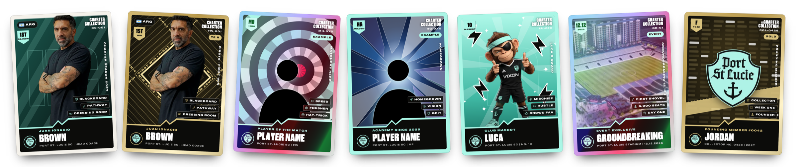
Octubre 2026 · Uso interno
Las pruebas en Buenos Aires, el reel que se viralizó, el "Built in Florida, con ADN argentino". Funcionaron: nos pusieron en el mapa y le dieron al club una identidad que nadie más tiene.
Eso es parte de quiénes somos. Pero nuestro público es el estadounidense, y no lo podemos descuidar.
Querían ver un club que hable su idioma. Después de varias acciones mirando a Argentina, el próximo gesto tiene que ser para ellos.
El partido como ritual de todo el día, no solo noventa minutos.
Seguir a cada jugador desde su primera temporada.
Guardar, completar, intercambiar. Volver por la que falta.
Dos generaciones con una carta en la mano.
El club presenta a su gente como lo hace el deporte estadounidense: con trading cards. Un entrenador, un jugador, un hito del club. Cada anuncio sale como una carta coleccionable.
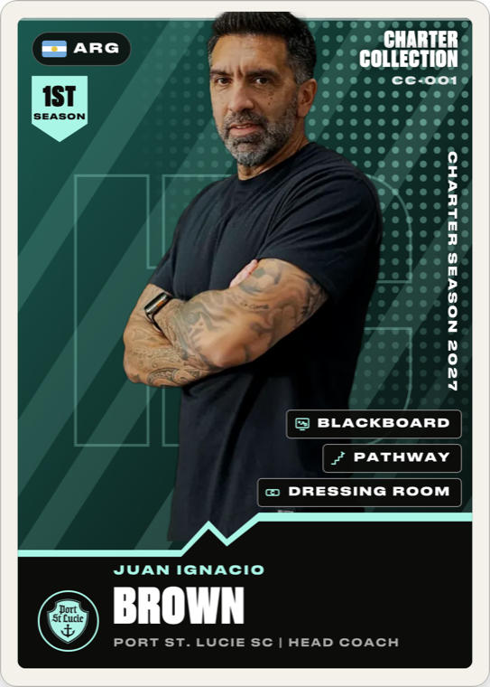
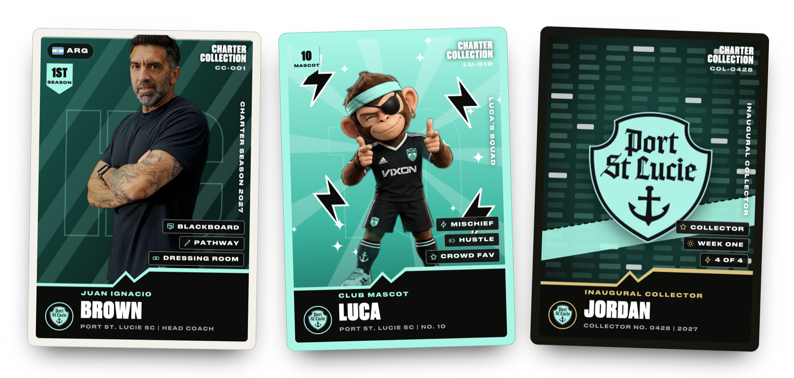
NFL, NBA, MLB. Nadie necesita que le expliquen qué es una carta.
El padre que coleccionaba y el hijo que juega en la academia.
Vive en la mano y en el teléfono. Un código une los dos mundos.
Es coleccionable: siempre falta una. Cada anuncio es una excusa.
La presentación del DT convertida en juego. Cuatro días, una pregunta por día sobre el club, una pista por respuesta. El viernes la carta se da vuelta.
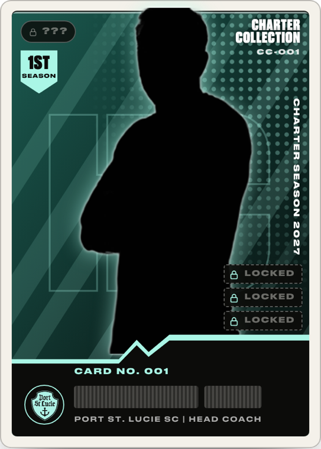
Arranca bloqueada. Solo se ve la silueta.
Cada pregunta abre una pista: nacionalidad, trayectoria y más. Acierte o no, la pista se abre igual.
Reveal. La carta completa entra a la colección de cada fan.
Pensado primero para el teléfono y fácil de replicar en Stories. La experiencia vive en su propia página; la home del club solo la enlaza.
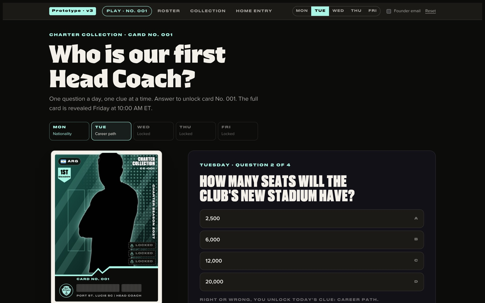
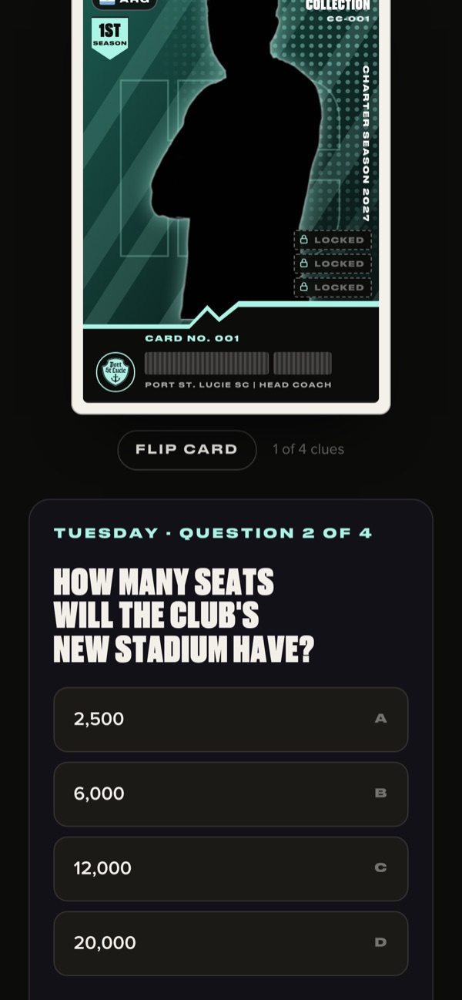
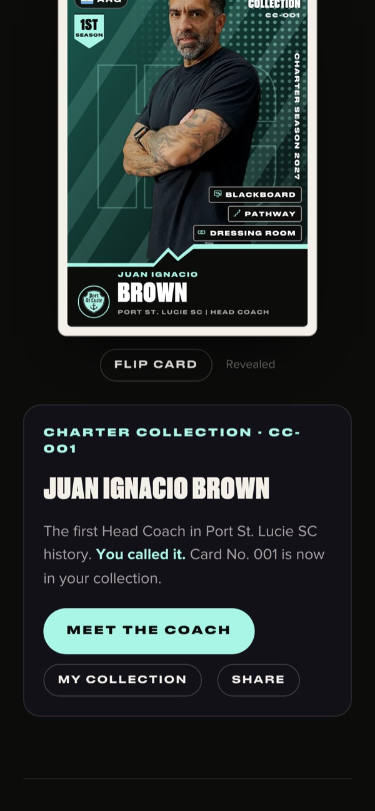
Respetamos los códigos que el coleccionista estadounidense ya conoce, con la identidad del club.
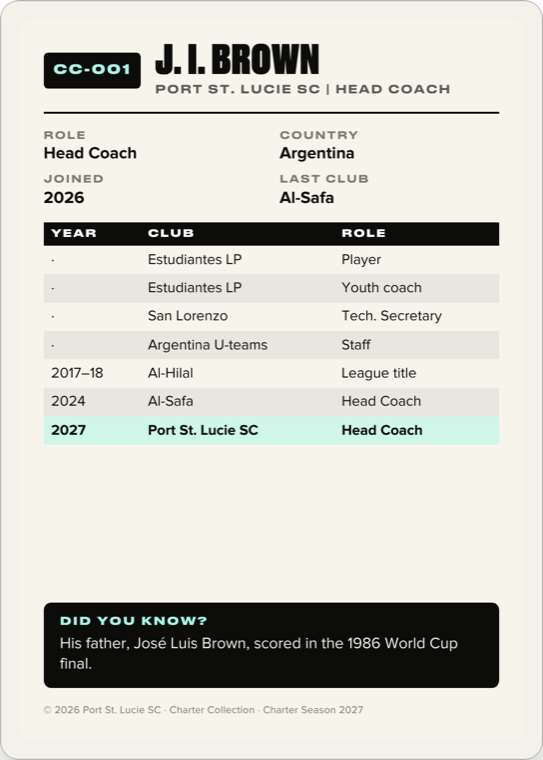
Cada fan que deja su mail recibe su Collector Card, propia y numerada. Los Founding Members reciben la versión dorada con su número de fundador.
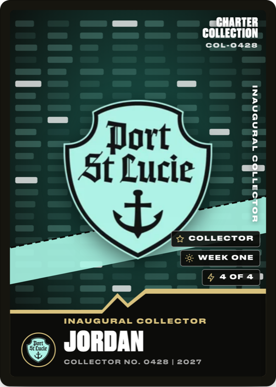
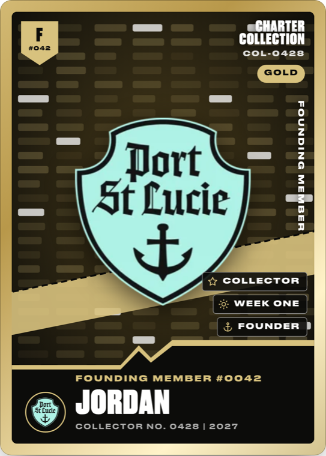
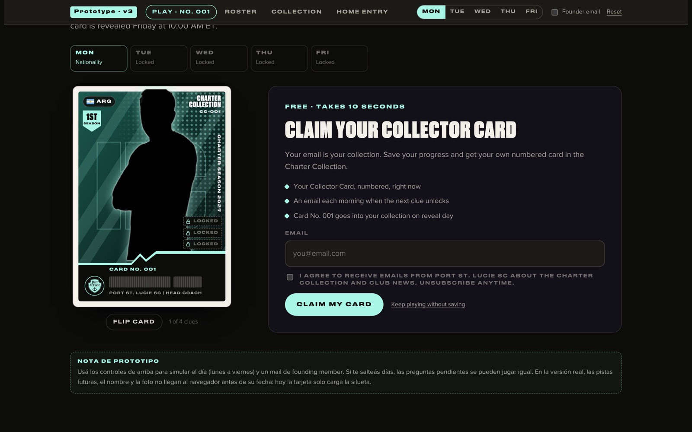
El mail es la colección. Cada carta reclamada es un fan con nombre propio y un motivo para recibir noticias del club cada mañana.
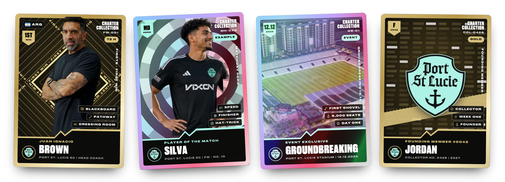
El roster se presenta en serio, como en cualquier club profesional. Lo coleccionable vive en su propio espacio, sin mezclarse con la información deportiva.
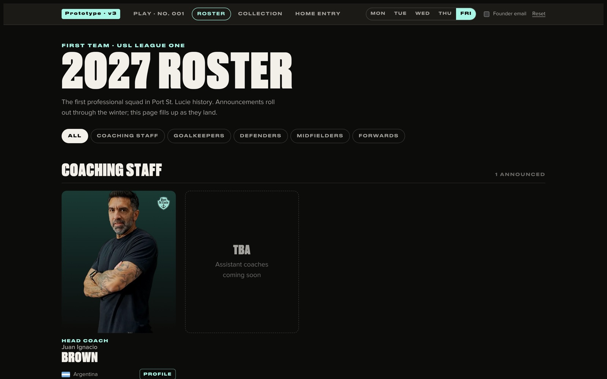
Fotos, posiciones y datos. El tono de un club profesional.
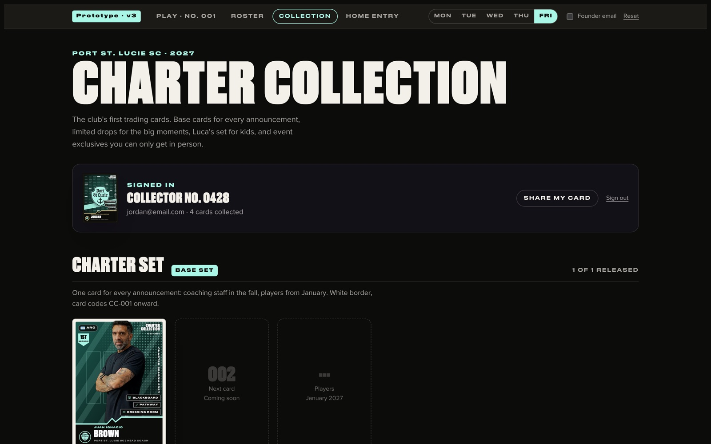
El álbum de cada fan, con lo que tiene y lo que le falta.
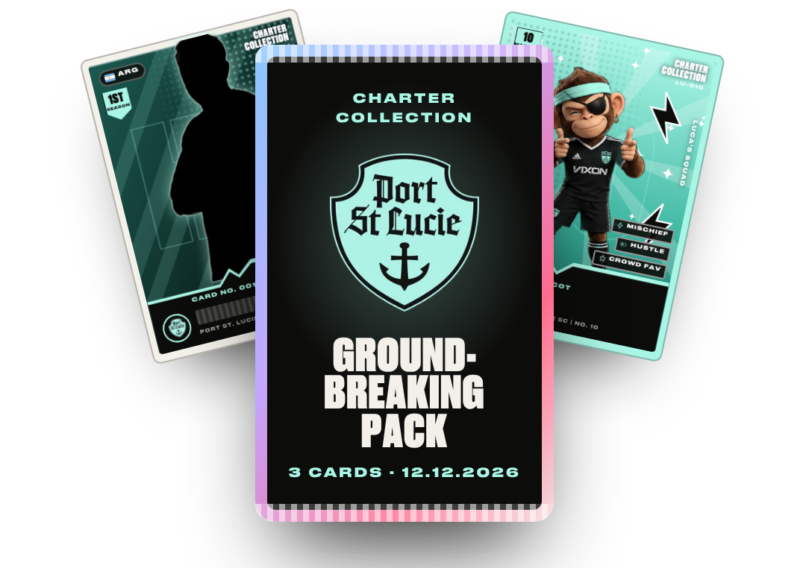
12.12.2026 · Groundbreaking del estadio
La idea se instala en persona. Cada asistente se lleva un sobre gratis, con tres cartas y un código para sumarlas a su colección digital.
El sobre se regala en el Groundbreaking y después se vende. Es la lógica clásica de las cartas estadounidenses, aplicada al club.
A la venta en el Shop antes del debut.
Durante la temporada, atados a lo que pasa en la cancha.
Algo accesible al lado de la camiseta, para el que todavía no compra merch.
Precio y proyección: a definir juntos con el club.
Reveal del Head Coach, Card No. 001.
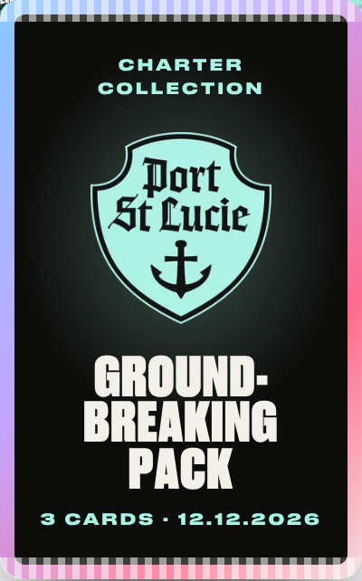
Groundbreaking Pack en el evento del estadio.
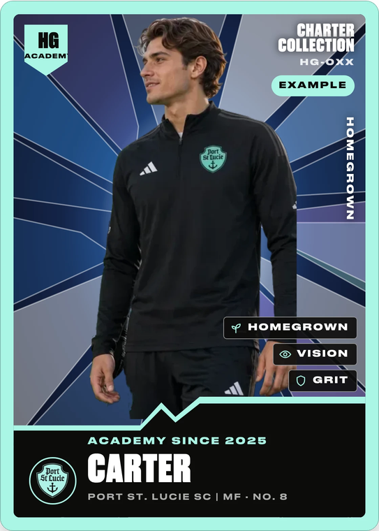
Una carta por cada jugador del plantel.
Sobres de temporada a la venta en el Shop.
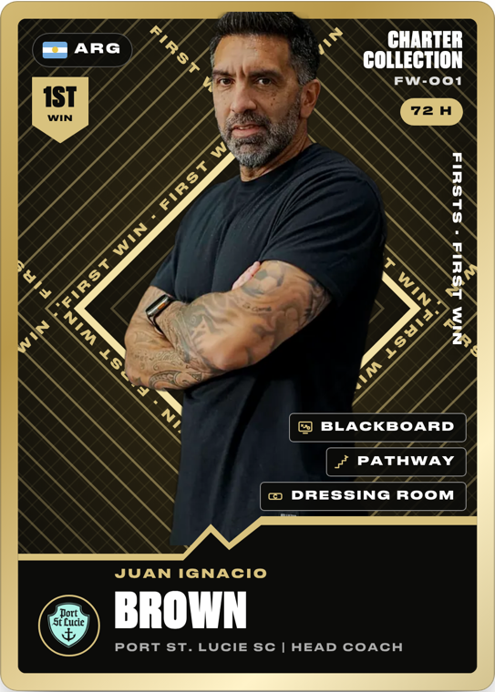
Firsts, Matchday Hero y la carta de cada partido.
Preguntale lo que quieras al asistente. Conoce el contenido completo de esta presentación.
Este asistente responde exclusivamente sobre el contenido de esta presentación. Puede cometer errores. Para consultas, escribí a contact@yacare.io.